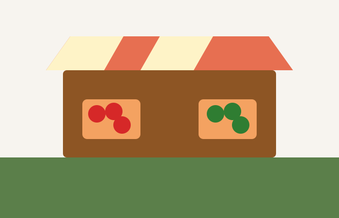

Neighborhood Color Walk Gallery
This gallery collects six small scenes from a quiet neighborhood walk: morning light, public art, shared gardens, evening windows, weekend markets, and a calm path home.
Hover over or focus on an image below to display here.
